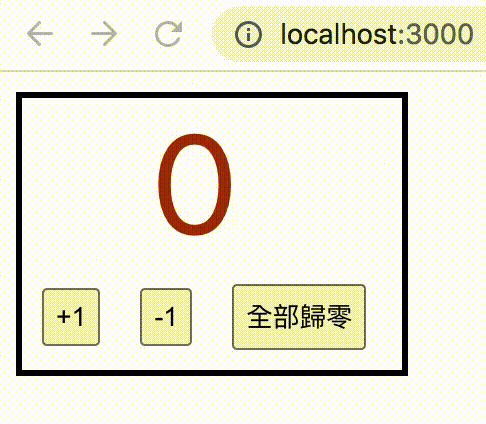
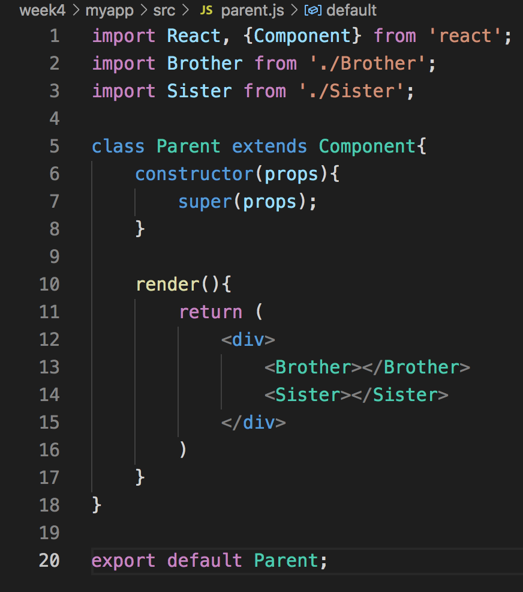
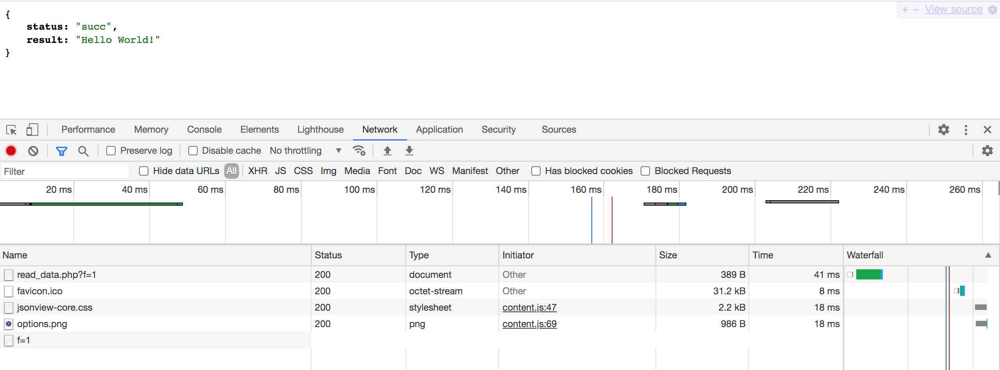
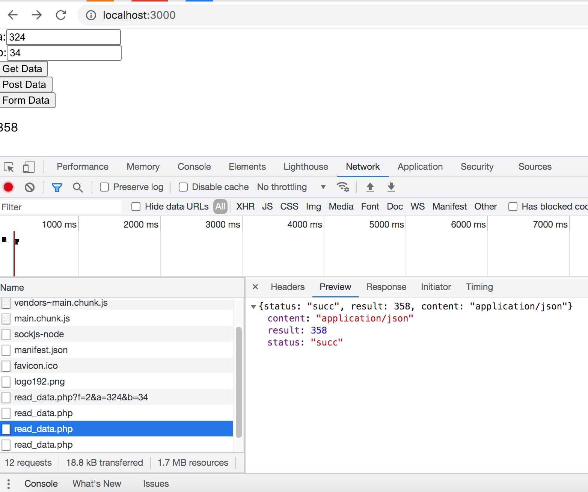
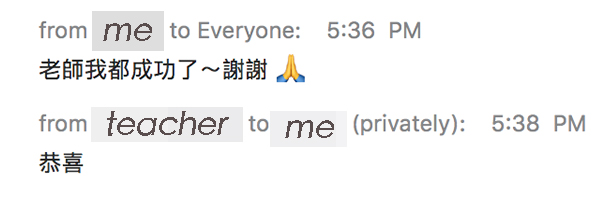

React
在 React 裡面，run 一遍函式 setState 後，其實數值並不會立刻改變更新，要到 render 才會發生改變！若是要測驗時，要特別注意！（或要在函式裡使用 callback function 去取得 render 後的結果）
函數中的狀態變數宣告 - const [狀態變數名稱, 改變狀態的函數名稱] = useState(狀態初始值);
老師說要做可以+1、-1、歸零的計算器，想說搞不好很難，沒想到使用 useState 是真的好簡單耶！以下是呈現結果。（後來看了老師的寫法，發現老師是用 class 來寫，超級少程式碼的！學習～）
useState
- useState可以視為state與setState的集合體。宣告：變數型態 [state變數名稱, setState函式名稱] = useState(state變數初始值)
- useState不可以在function component中的nest function、if-else、迴圈中被定義使用
寫到這邊覺得好Q哈哈，import 雙親、哥哥跟姊姊XD
Fetch API - Fetch是一個Promise，語法如下：
今天有小問題一直找不到，真的看到眼睛脫窗，後來在群組問，有同學幫助回答我了XDD 真的眼睛脫窗鬼遮眼看不清楚。感謝同學！（成功啦）
原來 get 跟 post 大小寫有分耶...我以為都可以（驚）害我今天下午開螢幕跟老師分享了一會...尷尬，全班跟我一起糾錯。很開心！最後都有成功了～感謝老師幫忙揪錯，同學還幫我找哪裡有錯，嗚嗚感動。
老師還跟我恭喜，笑死，好可愛。
